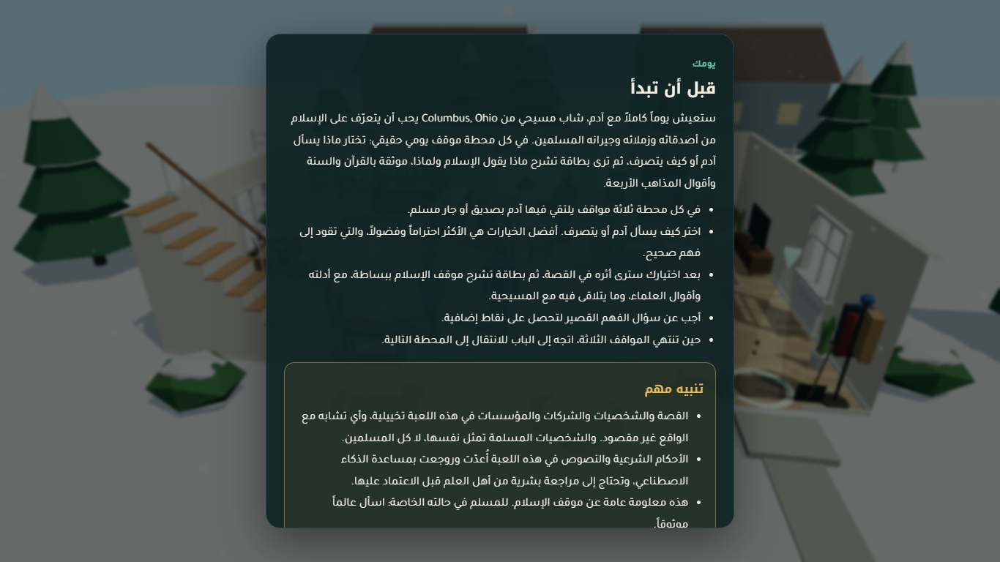

٢. هدف المرحلة والتكاملQQs2QQ
الهدف أن يتحول ما بُني في المرحلتين السابقتين إلى نسخة مستقرة قابلة للتسليم. وحين تغيّرت الفكرة في آخر المرحلة، صار الهدف أيضاً التأكد من أن النسخة الجديدة سليمة بالدرجة نفسها.
ما الذي دُمج
| الجزء | حالته بعد التكامل والتحول |
|---|---|
المحتوى (content/rulings، content/script) | 18 حكماً، في كل منها newcomer_explainer وcommon_ground، و18 موقفاً بالسيناريو الجديد. ولم يغيّر وكيل الجودة أي ملف محتوى. |
المحرك (src/engine) | يعرض قسمي «ببساطة» و«قيم مشتركة»، وشاشة النهاية الجديدة، وstations وplayerLook. وفيه ملخص «تقدّمك حتى الآن» قبل اكتمال الأسبوع (الإيداع 3017f28). |
المشاهد الست (src/scenes) | حُدّثت كلها للفكرة الجديدة، وكلها حقيقية بلا بديل، ولا نقطة تفاعل توضع آلياً. وخُففت المناسبات العامة (الإيداع 72c1acf). |
الاختبارات (tests/) | content.test.mjs، safety.test.mjs، audit.test.mjs، ومعها أدوات مساعدة، ومسار لعب كامل (e2e/playthrough.mjs). وأُضيف 18 اختباراً لعقد التحول، واختبار لروابط README. |
| الأدوات | tools/serve.mjs: خادم ثابت. وtools/audit/verify.mjs: يفحص القرآن والحديث والاقتباسات، ومعها فحص no-scripture. وsources_md.mjs: يولّد سجل المصادر. |
| التوثيق والمستودع | README.md أُعيدت كتابته للفكرة الجديدة. ومستودع git محلي. |
اللعبة الآن


playerLook)، ولوحة الجائزة خارج متجر طارق
